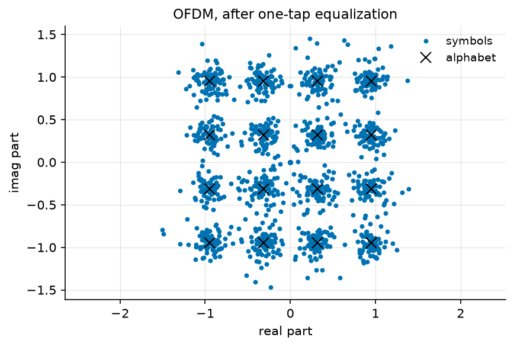
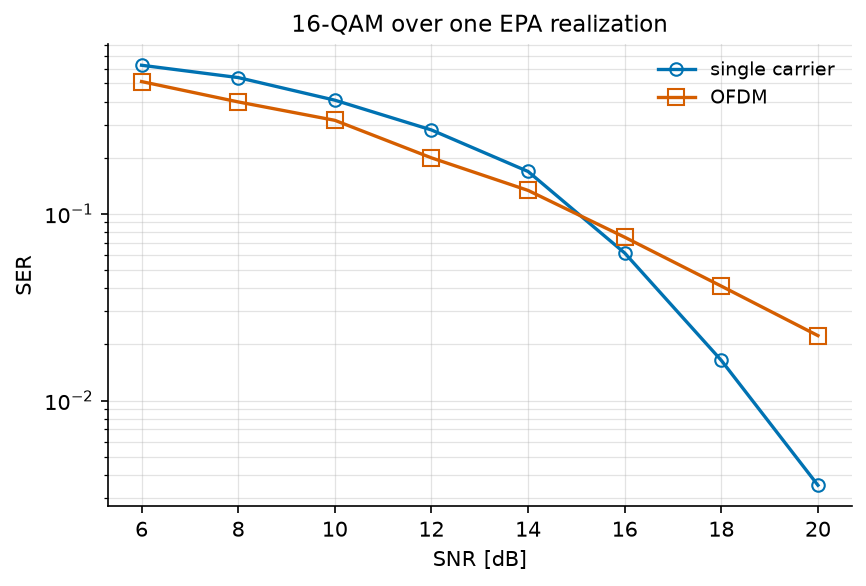
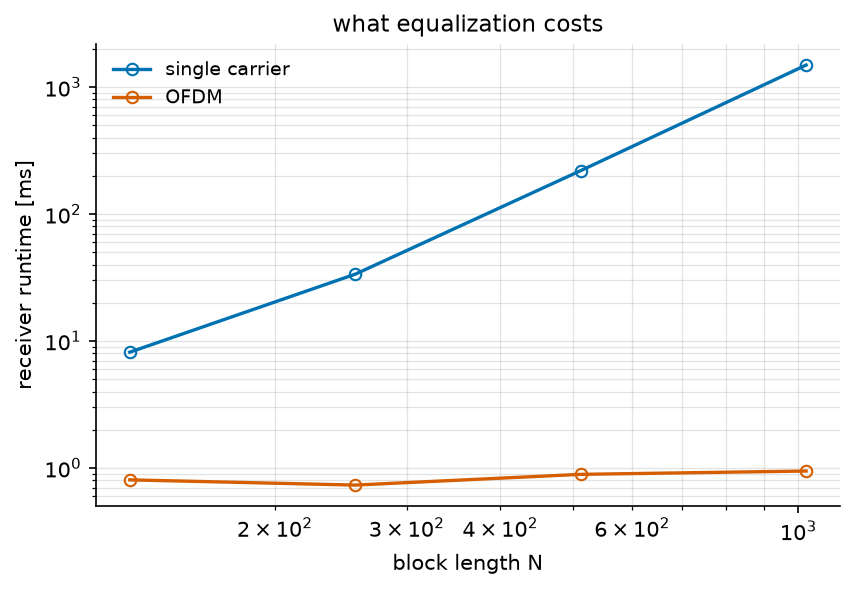

OFDM Tutorial#
A radio signal usually arrives several times: once by the direct path, and again by every reflection, each with its own delay and attenuation. Each symbol then lands on top of the tails of the previous ones – inter-symbol interference (ISI) – and the receiver has to undo it.
There are two classical ways of doing this, and this tutorial applies both to the same channel: invert the channel as one large matrix (single carrier), or split the band into subcarriers narrow enough that each one sees a flat channel (OFDM).
Note
Before you start. Monte Carlo Simulation over AWGN Channel introduced the chain, seed,
monte_carlo and plot_error_rate; they are used here without being
re-explained. What is new is the channel: it is no longer a single
coefficient.
What you’ll learn:
How to define a multipath channel, and how to ask it what it is.
How single-carrier equalization and OFDM differ, in error rate and in cost.
Why wideband receivers are built the second way.
This tutorial is suitable for engineers and students interested in digital communications, combining practical examples with theoretical insights.
Channel Model#
Two models are involved, and they describe the same channel at two levels.
The environment is a set of echoes with random gains – a power delay profile and a fading process. This is the tapped delay line model:
where \(d_l\) is the delay of path \(l\) in samples and \(a_l[n]\) its random gain.
Drawing from this model once freezes the gains, and what remains is a tap vector \(h[l]\), i.e. a finite impulse response (FIR) channel:
where \(b[n]\) is the noise. Stacking \(N\) samples in vector form gives
where \(\mathbf{H}\) is the Toeplitz convolution matrix built from the taps. This matrix is not diagonal, and that is precisely what ISI is. Both receivers below are given \(h\), so this tutorial is about equalization, not about channel estimation.
Implementation#
We start with the imports and the parameters of the simulation: 16-QAM, 1280 symbols, and a sampling frequency of 7.68 MHz.
"""Single-carrier equalization against OFDM, on one EPA channel.
Run from this directory: it writes the tutorial's figures and diagrams
into ../../docs/tutorials/.
"""
import matplotlib.pyplot as plt
import numpy as np
from comnumpy import monte_carlo, plot_data, print_data, style
from comnumpy.core import Sequential
from comnumpy.core.channels import AWGN, FIRChannel, TappedDelayLineChannel
from comnumpy.core.compensators import LinearEqualizer
from comnumpy.core.fading import get_delay_profile
from comnumpy.core.generators import SymbolGenerator
from comnumpy.core.mappers import SymbolDemapper, SymbolMapper
from comnumpy.core.metrics import compute_ser
from comnumpy.core.utils import Constellation
from comnumpy.core.visualizers import plot_error_rate, plot_iq
from comnumpy.ofdm.chains import OFDMReceiver, OFDMTransmitter
style.use()
img_dir = "../../docs/tutorials/img/"
N = 1280
fs = 7.68e6
snr_dB = 18
constellation = Constellation("QAM", 16)
We then use EPA, the 3GPP Extended Pedestrian A profile, one of the
standardized tables shipped with the library.
TappedDelayLineChannel draws one realization
of it, and info() returns what the channel is:
# --- the channel -----------------------------------------------------
# EPA is the 3GPP Extended Pedestrian A profile; the block draws one
# realization of it. The channel says what it is rather than being
# described from outside.
channel = TappedDelayLineChannel(get_delay_profile("EPA"), fs=fs, seed=8)
print(channel)
# Sounding the model with an impulse gives the realization as a tap
# vector -- which is what both receivers below are given.
h = channel.impulse_response()
fig, axes = plt.subplots(nrows=1, ncols=2, figsize=(10, 4))
channel.plot("impulse", ax=axes[0])
channel.plot("frequency", scale="dB", ax=axes[1])
axes[0].set_title("one realization of EPA")
axes[1].set_title("what each frequency sees")
plt.tight_layout()
plt.savefig(f"{img_dir}/one_shot_ofdm_fig1.png")
gain_dB = 20 * np.log10(np.abs(np.fft.fft(h, 128)))
print(f"\n|H| spans {gain_dB.max() - gain_dB.min():.1f} dB across "
f"{fs / 1e6:.2f} MHz")
kind: tapped delay line
standard: EPA
n_paths: 7
delays_ns: [0.0, 30.0, 70.0, 90.0, 110.0, 190.0, 410.0]
powers_dB: [0.0, -1.0, -2.0, -3.0, -8.0, -17.2, -20.8]
rms_delay_spread_ns: 43.12922598416199
coherence_bandwidth_Hz: 4637226.739785324
rice_k_dB: None
fs_Hz: 7680000.0
f_doppler_Hz: 0.0
n_taps: 4
resolvable_delays_samples: [0, 1, 3]
resolvable_powers: [0.5765216771059146, 0.420805847284595, 0.00267247560949035]
The profile has seven arrivals within 410 ns, but at \(f_s = 7.68\) MHz
the receiver can only distinguish 4 taps: two echoes separated by less
than one sample period are merged into one. plot() draws either reading
of the same vector, the impulse response or the frequency response, on a
linear or a decibel scale:

|H| spans 12.4 dB across 7.68 MHz
The channel varies by 12 dB between its best and its worst frequency. No subcarrier is annihilated, but the channel is clearly not flat, and the receiver has to deal with it.
Single-Carrier Communication Chain#
We first send 16-QAM symbols through the channel and equalize them with a Zero-Forcing (ZF) equalizer. Since \(\mathbf{H}\) is known, the estimate is the least-squares solution
where \(\mathbf{H}^{\dagger}\) is the pseudo-inverse of \(\mathbf{H}\). The interference is removed exactly. What remains is the noise, amplified where the channel is weak and spread over the whole block. The cost is the pseudo-inverse of an \((N+L-1) \times N\) matrix, i.e. \(O(N^3)\).
Implementation#
# --- the problem -----------------------------------------------------
# Send 16-QAM straight through it and look at what arrives.
sc_chain = Sequential([
SymbolGenerator(constellation.order, name="data_tx"),
SymbolMapper(constellation),
FIRChannel(h),
AWGN(snr_dB=snr_dB, name="data_rx"),
LinearEqualizer(h, method="zf", name="data_rx_eq"),
SymbolDemapper(constellation)
], taps=["data_tx", "data_rx", "data_rx_eq"])
sc_chain.seed(1)
detected = sc_chain(N)
sc_ser = compute_ser(sc_chain.tap("data_tx"), detected)
print(f"single carrier: SER {sc_ser:.4f}, {sc_chain.elapsed_ * 1e3:.0f} ms")
fig, axes = plt.subplots(nrows=1, ncols=2, figsize=(9, 4.2))
for ax, tap, name in [(axes[0], "data_rx", "received"),
(axes[1], "data_rx_eq", "after ZF equalization")]:
plot_iq(sc_chain.tap(tap), reference=constellation, title=name, ax=ax)
plt.tight_layout()
plt.savefig(f"{img_dir}/one_shot_ofdm_fig2.png")
Results#
single carrier: SER 0.0117, 3713 ms

On the left, the constellation has disappeared: each sample is a mixture of four consecutive symbols, and no decision region survives this. On the right, the equalizer has restored the sixteen clusters. Note the second number: more than three seconds for 1280 symbols.
OFDM Communication Chain#
Rather than inverting \(\mathbf{H}\), OFDM diagonalizes it. A circulant matrix is diagonalized by the DFT, and a cyclic prefix – the last \(N_{cp}\) samples of each block, repeated in front of it – is what turns the linear convolution of the channel into a circular one. In the frequency domain the channel is then one complex number per subcarrier:
so that equalization is a single division per subcarrier, \(\widehat{X}[k] = Z[k]/H[k]\). No matrix is inverted, and the two transforms cost \(O(N \log N)\).
This requires \(H(f)\) to be constant across one subcarrier. The channel tells us whether it is: its coherence bandwidth is 4.6 MHz, against a subcarrier spacing of \(7.68\,\text{MHz}/128 = 60\) kHz, seventy times narrower. The prefix must also be longer than the channel, \(N_{cp} \geq L\): here \(N_{cp} = 10\) for 4 taps.
Implementation#
The OFDM chain is the single-carrier one with a transmitter block added before the channel and a receiver block after it:
# --- the other strategy ----------------------------------------------
N_carrier = 128
N_cp = 10
ofdm_chain = Sequential([
SymbolGenerator(constellation.order, name="data_tx"),
SymbolMapper(constellation),
OFDMTransmitter(N_carrier, N_cp),
FIRChannel(h),
AWGN(snr_dB=snr_dB, name="data_rx"),
OFDMReceiver(N_carrier, N_cp, h=h, name="data_rx_eq"),
SymbolDemapper(constellation)
], taps=["data_tx", "data_rx_eq"])
ofdm_chain.seed(1)
detected = ofdm_chain(N)
ofdm_ser = compute_ser(ofdm_chain.tap("data_tx"), detected)
speedup = sc_chain.elapsed_ / ofdm_chain.elapsed_
print(f"OFDM : SER {ofdm_ser:.4f}, {ofdm_chain.elapsed_ * 1e3:.2f} ms "
f"({speedup:.0f} times faster)")
plot_iq(ofdm_chain.tap("data_rx_eq"), reference=constellation,
title="OFDM, after one-tap equalization")
plt.savefig(f"{img_dir}/one_shot_ofdm_fig3.png")
OFDMTransmitter and OFDMReceiver are themselves chains:
serial-to-parallel conversion, subcarrier allocation, IFFT and cyclic prefix
on one side; the same in reverse, closed by a one-tap
FrequencyDomainEqualizer, on the other.
Results#
OFDM : SER 0.0406, 1.06 ms (3494 times faster)
{kind=link}

The two numbers point in opposite directions: three and a half times as many errors, in a thousandth of the time.
Monte Carlo Evaluation#
A single operating point is not a conclusion, so we run both chains over a range of SNR values:
# --- error rate ------------------------------------------------------
# One operating point is not a conclusion, and 1280 symbols only
# resolve down to 8e-4. Instead of a Python loop over repeated runs,
# the stimulus grows a leading batch axis (D51): every block broadcasts
# over it, the noise is drawn independently per trial, and compute_ser
# pools the n_trials frames of each sweep point -- exactly the mean of
# the per-trial rates. The channel stays the same throughout, by
# construction.
snr_dB_list = np.arange(6, 22, 2)
n_trials = 2
# --- the sweep: no simulation loop -----------------------------------
curves = {}
curves["single carrier"] = monte_carlo(
sc_chain, "data_rx.snr_dB", snr_dB_list, {"ser": compute_ser},
(n_trials, N), reference="data_tx", seed=1)["ser"]
curves["OFDM"] = monte_carlo(
ofdm_chain, "data_rx.snr_dB", snr_dB_list, {"ser": compute_ser},
(n_trials, N), reference="data_tx", seed=1)["ser"]
# --- results: table and figure ---------------------------------------
ser_data = {"x": snr_dB_list, "curves": curves}
print()
print_data(ser_data, xlabel="SNR [dB]", ylabel="SER")
plot_error_rate(snr_dB_list, curves, ylabel="SER",
title="16-QAM over one EPA realization")
plt.savefig(f"{img_dir}/one_shot_ofdm_fig4.png")
SER
SNR [dB] single carrier OFDM
--------------------------------
6 0.62578 0.5117
8 0.53750 0.3980
10 0.40664 0.3172
12 0.28164 0.1996
14 0.16875 0.1336
16 0.06172 0.0750
18 0.01641 0.0410
20 0.00352 0.0223
{kind=link}

The two curves cross near 15 dB: above it, uncoded OFDM makes more errors than the single carrier.
The reason is where each receiver puts the damage. OFDM gives subcarrier \(k\) the gain of one frequency, so a subcarrier that falls in a dip is lost and nothing in the block can help it. The single-carrier equalizer inverts a linear convolution and spreads the enhanced noise over the whole block, so every symbol gets the same, mediocre, gain. An error rate is dominated by the worst symbols, and OFDM’s worst are far worse – which is what the crossing is.
Uncoded, OFDM is therefore the worse receiver. In practice this is never the operating condition: because the damage is concentrated on a few subcarriers instead of being spread, a code applied across subcarriers repairs exactly the ones the channel put in a hole. This is why no real OFDM system is uncoded, and why the comparison above is its worst case.
Computational Cost#
The case for OFDM is in the other column. We measure both receivers as the block length grows:
# --- what it costs ---------------------------------------------------
# A chain records the wall time of its last pass in `elapsed_`, so the
# run is also the measurement. One loop, over the swept lengths; the
# two chains are timed explicitly inside it.
lengths = np.array([128, 256, 512, 1024])
runtime = {"single carrier": np.zeros(len(lengths)),
"OFDM": np.zeros(len(lengths))}
for index, length in enumerate(lengths):
sc_chain.seed(1)
sc_chain(int(length))
runtime["single carrier"][index] = 1e3 * sc_chain.elapsed_
ofdm_chain.seed(1)
ofdm_chain(int(length))
runtime["OFDM"][index] = 1e3 * ofdm_chain.elapsed_
# --- results: table and figure ---------------------------------------
print()
print_data({"x": lengths,
"curves": {"single carrier": runtime["single carrier"],
"OFDM": runtime["OFDM"],
"ratio": (runtime["single carrier"]
/ runtime["OFDM"])}},
xlabel="block length N",
ylabel="receiver runtime [ms], and their ratio")
# The same arrays, drawn. The ratio is dimensionless and does not
# belong on an axis in milliseconds, so the figure takes the two
# runtimes alone.
ax5 = plot_data({"x": lengths, "curves": runtime},
xlabel="block length $N$",
ylabel="receiver runtime [ms]",
xscale="log", yscale="log", marker="o", fillstyle="none")
ax5.set_title("what equalization costs")
plt.savefig(f"{img_dir}/one_shot_ofdm_fig5.png")
receiver runtime [ms], and their ratio
block length N single carrier OFDM ratio
---------------------------------------------
128 8.16 0.805 10.1
256 33.58 0.733 45.8
512 219.69 0.890 246.8
1024 1491.35 0.945 1577.4
{kind=link}

The single-carrier receiver grows with the block length; the OFDM one does not move, since its work per symbol is one FFT and one division whatever the block size. At \(N = 1024\) the ratio is already three orders of magnitude, and it widens with every doubling. (Run times are what they are: these were measured on one machine, and the ratio is the robust number, not the milliseconds.) A 20 MHz LTE carrier equalizes 1200 subcarriers every 70 µs; no version of that pseudo-inverts a matrix.
Conclusion#
This tutorial compared the two ways of undoing a multipath channel, on one realization of a standardized profile.
You have learned how to:
Model a multipath channel, and read its properties from
info()andplot()instead of recomputing them.Simulate both receivers on the same channel realization.
Apply ZF equalization (SC) and one-tap equalization (OFDM).
Compare them in symbol error rate and in computational cost.
Key takeaway: OFDM turns a frequency-selective channel into a set of flat subchannels, so that equalization becomes one complex division per subcarrier instead of a matrix inversion. Uncoded, it is the worse receiver; it is also the only one that scales, and coding across the subcarriers gives back what it gave up.
One question remains open, and it is the next tutorial. PAPR in OFDM Communication asks what this waveform costs at the transmitter: summing 128 subcarriers produces peaks that an amplifier must survive.
References#
D. Falconer, S. L. Ariyavisitakul, A. Benyamin-Seeyar and B. Eidson, “Frequency domain equalization for single-carrier broadband wireless systems”, IEEE Commun. Mag., vol. 40, no. 4, pp. 58-66, 2002 – the comparison of this page, and the reason DFT-spread OFDM exists.
R. van Nee and R. Prasad, OFDM for Wireless Multimedia Communications, Artech House, 2000, Chapter 2.
3GPP TS 36.104, Annex B – the EPA delay profile used here.